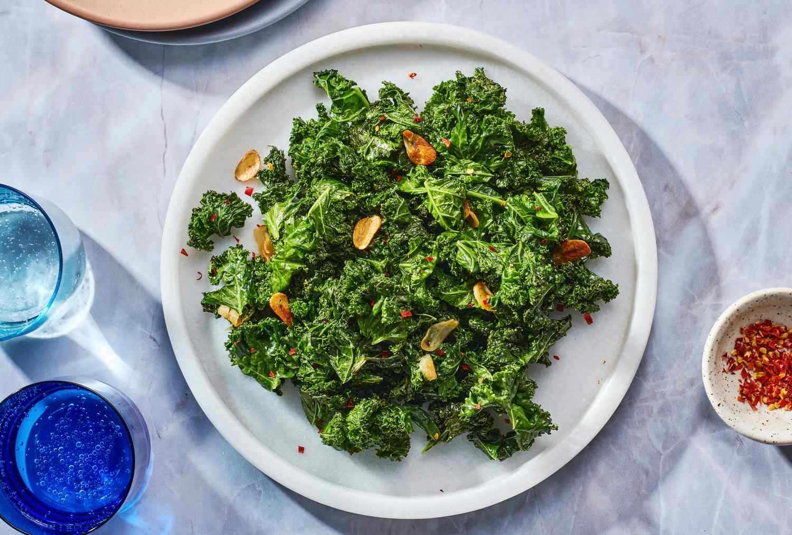
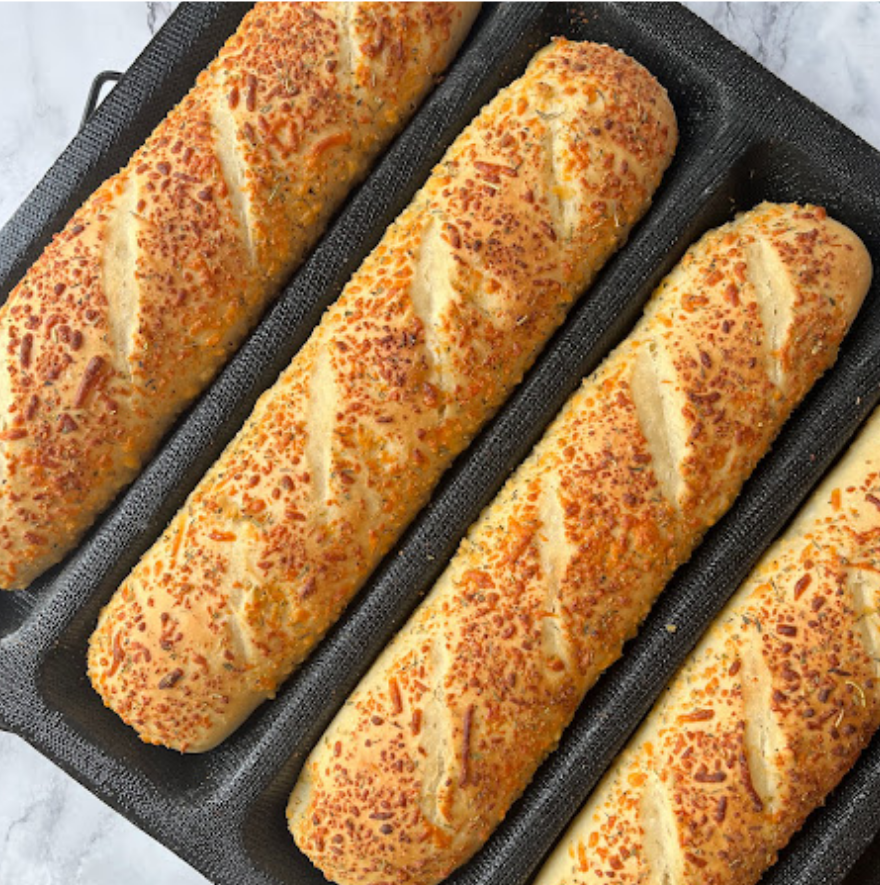

World's Best Lasagna

This lasagna recipe takes a little work, but it is so satisfying and filling that it's worth it!
Ingredients
- 1 pound sweet Italian sausage
- ¾ pound lean ground beef
- ½ cup minced onion
- 2 cloves garlic, crushed
- 1 (28 ounce) can crushed tomatoes
- 2 (6.5 ounce) cans canned tomato sauce
- 2 (6 ounce) cans tomato paste
- ½ cup water
- 2 tablespoons white sugar
- 4 tablespoons chopped fresh parsley, divided
- 1 ½ teaspoons dried basil leaves
- 1 ½ teaspoons salt, divided, or to taste
- 1 teaspoon Italian seasoning
- ½ teaspoon fennel seeds
- ¼ teaspoon ground black pepper
- 12 lasagna noodles
- 16 ounces ricotta cheese
- 1 egg
- ¾ pound mozzarella cheese, sliced
- ¾ cup grated Parmesan cheese
Steps
- Gather all your ingredients.
- Cook sausage, ground beef, onion, and garlic in a Dutch oven over medium heat until well browned.
- Stir in crushed tomatoes, tomato sauce, tomato paste, and water. Season with sugar, 2 tablespoons parsley, basil, 1 teaspoon salt, Italian seasoning, fennel seeds, and pepper. Simmer, covered, for about 1 ½ hours, stirring occasionally.
- Bring a large pot of lightly salted water to a boil. Cook lasagna noodles in boiling water for 8 to 10 minutes. Drain noodles, and rinse with cold water.
- In a mixing bowl, combine ricotta cheese with egg, remaining 2 tablespoons parsley, and 1/2 teaspoon salt.
- Preheat the oven to 375 degrees F (190 degrees C).
- To assemble, spread 1 ½ cups of meat sauce in the bottom of a 9x13-inch baking dish. Arrange 6 noodles lengthwise over meat sauce, overlapping slightly. Spread with 1/2 of the ricotta cheese mixture. Top with 1/3 of the mozzarella cheese slices. Spoon 1 ½ cups meat sauce over mozzarella, and sprinkle with 1/4 cup Parmesan cheese.
- Repeat layers, and top with remaining mozzarella and Parmesan cheese. Cover with foil: to prevent sticking, either spray foil with cooking spray or make sure the foil does not touch the cheese.
- Bake in the preheated oven for 25 minutes. Remove the foil and bake for an additional 25 minutes.
- Rest lasagna for 15 minutes before serving.
Garlic Kale

This delicious kale recipe is full of antioxidants and nutrients that will nourish your body inside and out!
Ingredients
- 1 Bunch of Kale
- 2 Tablespoons of Olive
- 4 Cloves Garlic, Minced
- Tear the kale leaves into bite-size pieces from the thick stems; discard the stems.
- Heat the olive oil in a large pot over medium heat.
- Cook and stir the garlic in the hot oil until softened, about 2 minutes.
- Add the kale and continue cooking and stirring until the kale is bright green and wilted, about 5 minutes more.
Italian Cheese Bread

A delicious buttery Italian cheese bread.
Ingredients
- 1 ¼ cups warm water
- 3 cups bread flour
- ½ cup shredded pepper jack cheese
- 2 teaspoons Italian seasoning
- 1 teaspoon ground black pepper
- 2 tablespoons grated Parmesan cheese
- 2 tablespoons brown sugar
- 1 ½ teaspoons salt
- 2 teaspoons active dry yeast
- Place warm water, flour, pepper Jack cheese, Italian seasoning, black pepper, Parmesan cheese, brown sugar, salt, and yeast in the pan of a bread machine in the order suggested by the manufacturer.
- Select White Bread or Basic cycle, then Start.